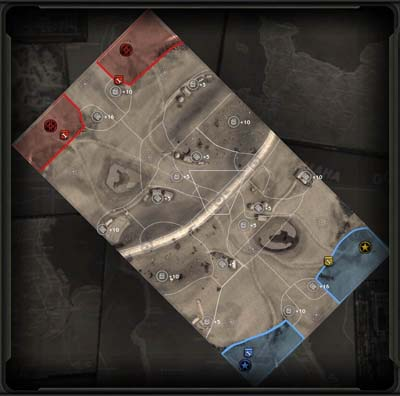

Solid Snake/Project X
Project X; Design Document
General Overview
Project X is a team based game. The teams have a base located at one end of the map. Distributed through out the map are strategic nodes tied with control zones. The goal of the game, is to destroy the enemies base. The general idea of the game is very similar to Onslaught.
Minimap

Example taken from Company Of Heroes |
Whether there will be a minimap or not is still up for debate. The camera viewport of the game is already top down (well, an angled version of it) thus what the player is already seeing could be a form of a minimap already. Anyways, this will help explain the game type. The map is split up into control zones, with a singular strategic node inside. When a team owns the strategic node they also gain control of the control zone. The strategic nodes are linked up by the mapper, and players must 'connect the dots' so that a pathway of control zones is formed between their base and their enemies base. From here, the team can attack the enemies base.
Control zones
Control zones split up the map in manageable chunks for the teams. Control zones give penalties to enemy attackers. When an enemy is inside your control zone, they will suffer negative buffs on their attacking and defending points. This means that enemies will not be able to defend or attack as effectively as they could on neutral zones or within their own zones (if you are attacking them). They will also slowly lose defense, till the point where a single hit would kill them.
Establishing frontlines (Not finished)
As with any war, its about establishing frontlines. The roles of this mechanic is to centralize combat to a single strategic node, as well as to stop players from randomly going off on their own and destroying other strategic nodes (A very annoying thing that occurs in both BF games and Onslaught). While some people would call that strategy, its just more frustrating than it is 'fun'. However centralizing combat was the main aim. A team is only allowed to have one front line, which exists in an enemy zone. Front lines are setup by two or more team members. The two team members set the angle of attack. Only one frontline can be established at a time. When a frontline is created, an area is considered neutral in which players do not suffer the negative influences from a controlled zone.
Expanding the frontlines (Not finished)
When a frontline is first established it is simply a straight border. It is possible to expand the front line by capturing Cover nodes that are dotted around. At the moment, this is not a very clear game mechanic as I need to create the 'Frontlines' mechanic and test that.
Player's Avatar
The player controls a single avatar during the entire game.
Player Development
Players are able to level up during the game. Players can never lose experience,
- Players gain experience by
- Capturing strategic nodes : Killing enemy soldiers
Cover
Cover is dependent on the environment around the player. Various things which influence cover for the player are objects within the map, the terrain type and the army around the player.
- Objects within the map that provide cover to the player
- This concept allows players to actively look for cover within the level. By being near objects which are defined by the mapper as cover influencing, players can directly control their cover levels by positioning themselves appropriately. Examples of objects which can influence cover are things such as sandbags formed as a wall, large crates or barrels, and so on. It is up to the mapper in this particular case. The amount of cover is determined by the mapper, they are able to use constants or interpolate depending on some factors, such as distance from the object.
- Terrain types
- Mappers define volumes which specify a cover influencing area. Thus players must look for areas of the map which enhance their cover, whilst avoid areas which have a negative impact on their cover. Take for example, if an area is a boggy marsh it will have a negative influence on the players cover, to simulate the decreased ability to dodge. An area which is heavily cratered may provide heavy cover as this would simulate the player being inside a shallow trench. The amount of cover is either on or off, as players can only be in the volume or not.
- Army
- Players or minions around you can also boost your own cover (and theirs as well). This is to simulate micro team work that may not be well simulated in the game itself. This covers smaller things which naturally occur on a battlefield, such as words of encouragement, and so forth. This concept is generally hard to capture fully in a game, and is summed up in this manner. Thus, your team mates emit an aura which does not benefit themselves. Team mates who stick together, will all gain benefits of increased cover. Team members who decide to solo, do not suffer any penalties, but do not gain any benefits from this.
Active cover is also possible. Players can automatically dive into areas of best cover if possible. Players only control the general direction of where he will dive into (forwards, left, right and backwards). There will be visual cues of where he will generally end up, so players have a chance of making decisions. Once active cover is activated, players can do a second tap. Three possibilities can occur out of a second tap.
- Perfect
- The player makes a perfect dive and lands exactly where there is best cover available. The player instantly gains the maximum amount of cover he is able to get, and is immediately able to respond again.
- Good
- The player makes a good dive and lands roughly where there is good cover available. The player gains an instant boost of cover. He has a shortened down time as well.
- Failure
- The player makes an attempt at diving but fails. While he lands roughly where there is good cover, he does not gain an instant boost of cover. His downtime is also increased, and during that downtime he cannot recover any extra cover points (he will only recover to his minimum cover value).
If players do not second tap, they simply do a dive with no instant benefits but do not suffer increased downtime. Thus a player must make decision based on his current situation and his skill level. Good players should be able to get good – perfect consistently, while amatuer players will usually get good most of the time. Players who do not get the concept should ideally not try to actively get into cover as there is no heavy punishments for not doing so (however, they would be punished all the time if they keep attempting and failing it).
Attack
Active reloading functions much like Gears Of War in this instance.
- Perfect
- The players reloads perfectly. The player reloads much faster and gains an instant boost in his attack damage.
- Good
- The player reloads well. The player reloads faster and gains a small instant boost in his attack damage.
- Failure
- The player fails to reload. The player jams his gun in the process, and suffers a time penalty. He does not receive any boost in attack damage.
Combat
Combat is initiated when a player moves his mouse cursor over an enemy and presses the left mouse button. From there, both the attacker and his opponent will compare their attack vs cover respectively. While an attacker damages his opponent by reducing the opponents cover, the defender also 'damages' the attacker by reducing the attacker's attack strength. Thus, players who have high attack strength attacking an enemy player with low defense strength will hit them more often and more than likely kill them. Players with a low attack strength, if they try to attack an enemy player with a high defense strength they will lose their attack strength, thus missing more often and possibly even jamming their gun. While this is strictly non-realistic, it rewards players who have both a strong defense and a strong attack. It allows them to dish out the damage while reducing the damage output of his enemies (if they choose to attack him)
Attack strength is dependent on the position of the attacker relative to the defender. There are many bonuses gained from where the attacker chooses his attack position.
The calculations of combat depends if the attack succeeds. If the attack fails, then the defender will do 'damage' to the attacker. Thus the first calculation is done using, attack_strength / defense_strength. From here, the odds of succeeding is then looked up using this table.
| Ratio value | Success chance |
| > 1.8 | 99%+ |
| 1.58-1.79 | 95%-98% |
| 1.39-1.57 | 87%-90% |
| 1.25-1.38 | 75%-80% |
| 1.01-1.24 | 62%-75% |
| 1.0 | 50% |
| 0.80-0.99 | 25%-38% |
| 0.73-0.79 | 20%-25% |
| 0.64-0.72 | 10%-13% |
| 0.56-0.63 | 2%-5% |
| < 0.56 | <1% |
Once the success chance is found, the attack must roll (frand(0, 1)) the number lower than the sucess rating. So let's say I have an attack rating of 212 and the defender has a defense score of 165. We find the ratio by dividing the two numbers, 212/165, which is 1.28. Using the look up table, I have to roll 0.76 or lower to have a successful attack, if I roll higher then my attack fails.
- Case 1
- I get a roll of 0.56. This would mean I was successful in my attack, and I damage the defender by taking some of his cover away.
- Case 2
- I get a roll of 0.92. This would mean I failed at my attack, and I get damaged by having some of my attack taken away.
Skills
Skills provide players with the means to use perform special actions on the battlefield. There are six categories in which skills fall into.
- Category A
- Offensive
- These skills generally 'damage' the affected units. Damage can apply to both cover and attack. If either cover or attack is zero then the player will be killed. (Will have to think about this one a bit more)
- Defensive
- These skills will protect the player and/or his team mates. Protection can apply to both cover and attack.
- Category B
- Stun
- These skills will stun the affected units. Stunning a unit will cause the player to temporarily stop everything that he is doing for a period of time. Thus, stunned units are particularly vulnerable.
- Disable
- These skills will disable the affected units. A disable usually prevents things from doing something, thus you can disable someone from firing, using skills, inability to regenerate cover and/or attack.
- Category C
- Aura
- These skills provide a positive/negative effect to team mates/enemies who are nearby. They will using only do one or the other (provide a positive bonus, or a negative impact).
- Personal
- These skills provide a positive/negative effect to a targetted unit.